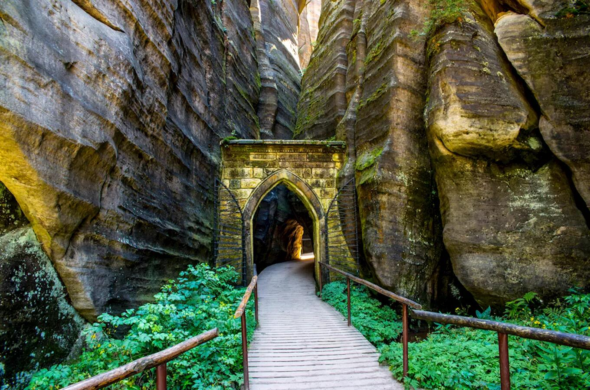
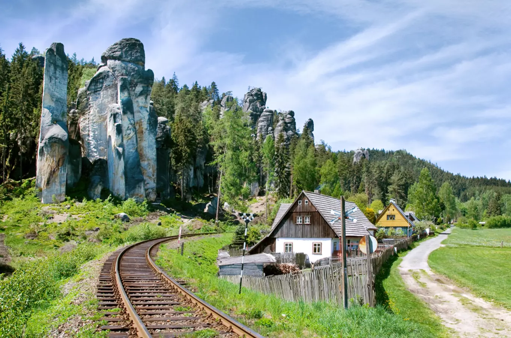
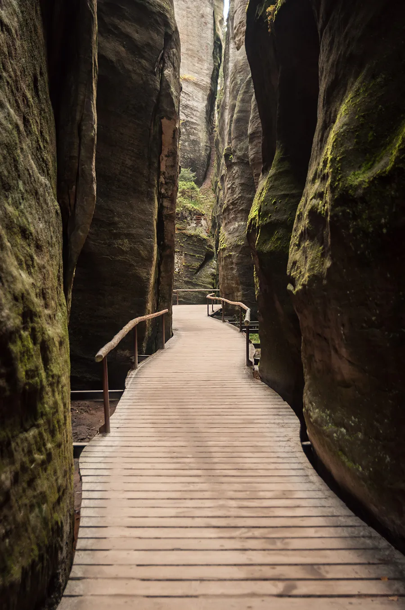
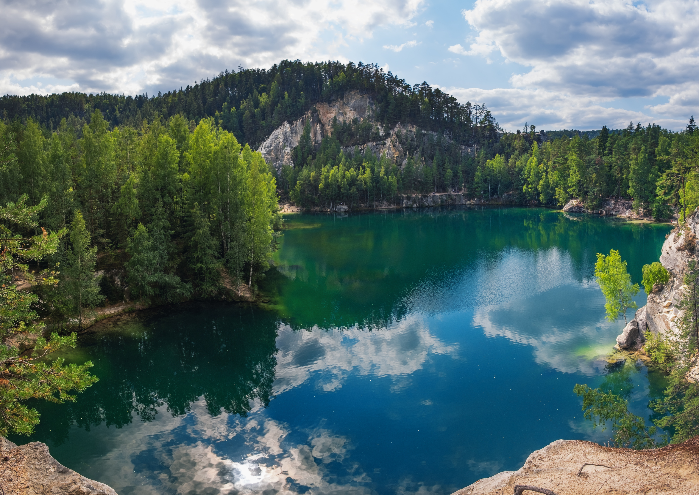

A spectacular landscape in northeast Czechia, famous for its sandstone rock formations, narrow paths and peaceful forest.
Adršpach is one of the most impressive natural areas in Czechia. The landscape is made up of huge sandstone rocks, forests and narrow paths that create a unique atmosphere.
The rock formations have been shaped by nature over millions of years. Today, visitors can explore the area on foot and discover many unusal shapes and viewpoints.

The Adršpach rock town is the main attraction of the area. Its waliking trails lead between towering sandstone formations, narrow passages and forested valleys.
Some of the rocks have traditional names inspired by their shapes. The trails offer different views of the formations and make the area interesting to explore throughout the year.

A small lake surrounded by sandstone rocks and forest is one of the most peaceful places in Adršpach. Its clear water creates beautiful reflections of the surrounding landscape.
Visitors can walk around the lake and enjoy a quieter part of the rock town away from some of the main paths.

Adršpach offers more than just impressive rocks. Visitors can explore forest trails, narrown passages, viewpoints and the unusual formations throughout the area.
The combination of sandstone cliffs, forests and peaceful paths makes Adršpach a memorable destination for anyone who enjoys nature and exploring unique landscapes.